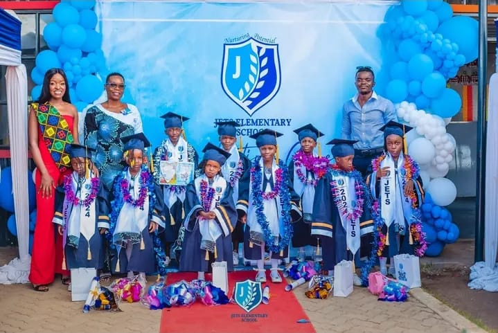

Jets Elementary School ,founded in 2023 at Gesoko Estate ,Manyatta in Kisumu , began with a strong vision for education. It was established to inspire young learners through a nurturing and supportive environment.The school embraces the child-based curriculum, ensuring every child learns at their own pace. Beyond academics, it seeks to uplift the community by promoting values of care and excellence. Its journey is a story of hope,growth and dedicationto shaping bright futures.
Jets Elementary School was founded in 2023 by Christian Omondi and Diana Omariba, two passionate visionaries inspired by their parents' dedication to education. Their dream was to give back to the comunity by providing quality learning opportunities. They believed that every child , regardless of background, deserved a strong foundation for success.Guided by the child-based curriculum,they laid the school foundation with love care and commitment. Today, their vision continue to shape both learners and the wider Gesoko community.
in the early years,the school had only afew classrooms and basic facilities.Teachers worked very hard to ensure that learners received the best despite the challenges.over time,jets elementary school expanded in both size and reputation.
Teachers and caregivers at jets elementary school have always played a central role in the life of the institution. They dedicated their time to feeding, teaching, and guiding learners. Their work is not easy as it requires patience, love, and commitment.
caregivers ensure that the youngest children are safe, clean, and well-fed. Teachers make sure that the curriculum is delivered effectively and that each child revices personal attention. Teachers make sure that the curriculum is delivered effectively and that each child receives personal attention. Together, they build a warm enviroment where learners feel at home.
Over the two years, jets elementary school has made several achievements:
Teachers at Jets Elementary School form the art of the institution. From its beginning, the school has been blessed with a team of dedicated educators who believe in the vision of providing quality education to young learners.
The teaching staff is made up of:
The staffs' dedication has led to:

At Jets Elementary School, the kitchen department plays a vital role in ensuring that every child is well fed,healthy and energized for learning.Our kitchen is managed by a dedicated team of cooks and support staff who work tirelessly to prepare balanced and nutritious meals everyday.
The department follows strict hygiene and safety standards, ensuring that all food is handled with care from preparation to serving.Meals are designed to meet the nutritional needs of growing children,combining Carbohydrates for energy,proteins for growth,vitamins for immunity and fruits for refreshment.Special attention is given to cleanliness and both staff and facilities are regularly monitored to maintain high standards.
Parents can be assured that their children are not only cared for academically but also physically through proper feeding.The kitchen department also fosters a warm,family like environment where children enjoy their meals together,encouraging good table manners and social bonding.
With a commitment to excellence,the kitchen department continues to be a pillar of Jets Elementary School,supporting the vision of holistic child development,mind,body and spirit.
Jets Elementary School is delighted to announce its graduation ceremony,scheduled for Thursday,23rd October 2025.This special event will mark a moment of pride and joy as our young learners graduate from their respective levels,stepping into the next stage of their educational journey.
The day will be filled with colorful celebrations,including processions,songs,dances,drama and speeches from our teachers,learners and invited guests.Parents and guardians are warmly invited to witness their children being honoured for their hardwork,discipline and achievements throughout the year.
Graduation is not just academic milestone but also a celebration of growth,character and potential.It is time to appreciate the efforts of teachers,caregivers and parents who have supported our learners every step of the way.
As we prepare to send off graduates with pride,Jets Elementary School remains committed to nurturing excellence and shaping the leaders of tomorrow.The graduation ceremony of 2025 will surely be a memorable event for the entire school community.
